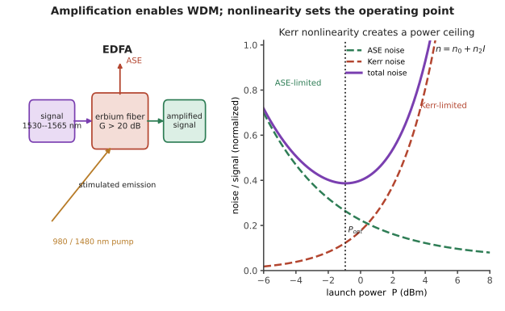

本页目录
光纤 III · 光放大与非线性
层次：本科核心 + 研究生方向。 两项物理支撑着现代光通信：光放大让信号能传数千公里而无需光电转换；非线性效应既是容量的限制（第十三页的非线性香农极限），也是一批重要器件的工作原理。本页把这两件事讲清楚。
学习层：EDFA 的最佳功率在两种噪声之间
1. 具体谜题：把入纤功率调大，为什么 SNR 先升后降？
考虑 \(N=8\) 级放大。低功率时 ASE 是主要噪声；高功率时克尔效应产生的非线性噪声随功率急剧增加。对一个可复算的教学模型，令信号功率为 \(P\)（mW），
当 \(P=0.25\,\mathrm{mW}\)（约 \(-6\,\mathrm{dBm}\)）时几乎被 ASE 限制；当 \(P=1\,\mathrm{mW}\)（\(0\,\mathrm{dBm}\)）时两者仍可平衡；当 \(P=4\,\mathrm{mW}\)（约 \(+6\,\mathrm{dBm}\)）时非线性项会突然占主导。你先预测最佳点在哪一侧。
2. 先预测：先看曲线形状，不急着找最大瓦数
- 把功率从 \(-6\) dBm 提到 0 dBm，ASE 相对信号的影响会怎样？
- 再从 0 dBm 提到 \(+6\) dBm，\(P^3\) 项会放大多少倍？
- 若放大器数增加，最佳功率向高功率移动、低功率移动，还是主要由两项噪声的比例决定？
3. 最小模型：材料非线性把强度写进相位
克尔效应从
开始；传播长度 \(L\) 后的非线性相移可写成 \(\phi_{NL}=\gamma P L\)。在 WDM 中，SPM、XPM 和 FWM 把相位扰动转成频谱展宽与通道串扰。与此同时，EDFA 的受激辐射伴随 ASE；多级放大使 OSNR 近似按 \(10\log_{10}N\) 下降。
实验用上面的固定模型计算
它不是某一台 EDFA 的规格，而是把“低端噪声”和“高端非线性”同时显形的可审计状态方程。最优点满足两项噪声的增长率开始抵消信号增益，而不是“功率越大越好”。
4. 实验：拖动入纤功率，观察两种噪声交接
先判断低功率、工作点和高功率三个区间，核对后再调整放大级数与功率。SVG 显示 ASE、非线性噪声和 SNR 曲线；表格逐项给出功率、总噪声与非线性相移代理量。
无 JavaScript 时的静态读法：取 \(N=8\)，使用 \(P_{ASE}=0.03N\)、\(P_{NL}=0.015NP^3\) 的教学模型。
| 入纤功率 | \(P\)（mW） | ASE（mW） | 非线性噪声（mW） | \(P/(P_{ASE}+P_{NL})\) | 主导项 |
|---|---|---|---|---|---|
| \(-6\) dBm | 0.251 | 0.24 | 0.00190 | 1.04 | ASE |
| \(0\) dBm | 1.00 | 0.24 | 0.12 | 2.78 | 平衡区 |
| \(+6\) dBm | 3.981 | 0.24 | 7.57 | 0.51 | 克尔非线性 |
这里把一项噪声至少达到另一项的 3 倍定义为“主导”；因此默认点的 ASE/非线性比约为 2，归入平衡区，而不是把接近的两项硬判成单一瓶颈。
5. 失败边界：模型能揭示方向，不能替代链路标定
- ASE 系数、\(\gamma\)、有效面积、色散和放大器增益平坦度都依赖器件与波段；上表不是商用 EDFA 的数据表。
- 零色散附近 FWM 相位匹配更强；“色散小”不是无条件的优点，NZ-DSF 的设计正是在两种风险之间取舍。
- 二阶电光效应还受晶体中心对称性约束；硅和石英没有普通的二阶非线性，不能把铌酸锂调制器的机制直接移植过去。
6. 迁移任务：把非线性当作限制也当作器件资源
为一条 WDM 链路选择入纤功率时，分别列出 ASE、SPM/XPM/FWM、SBS 和接收灵敏度的观测量。然后改写目标：如果任务变成超连续谱或孤子传播，你会故意把哪一项“噪声”调成有用的频谱变换？

一、EDFA：一项改变行业的发明
掺铒光纤放大器（EDFA）：在光纤中掺入铒离子，用 980 nm 或 1480 nm 泵浦形成粒子数反转（第六页），信号光经过时被受激辐射放大。
它的三个决定性优点：
① 直接放大光信号，无需光电光转换。 此前的中继器必须把光转成电、再生、再转回光——每个波长都要一套，且速率一旦升级就要全部更换。
② 增益带宽覆盖整个 C 带（约 1530–1565 nm） → 可同时放大所有 WDM 通道。
这一条是 WDM 得以规模化的关键（第十三页）：一台 EDFA 顶替了几十套电中继。这也是为什么 C 带成为长途干线的主战场——不是因为损耗最低（虽然确实最低），而是因为这里有放大器。
③ 对调制格式与速率透明——升级速率不必更换放大器。
代价：ASE 噪声。自发辐射被放大后成为背景噪声，用噪声指数（NF）衡量，理论下限约 3 dB（量子极限）。
链路的噪声累积：多级放大后 OSNR 逐级下降
\(N\) 级放大使 OSNR 下降 \(10\log N\) → 这是长距系统的根本约束之一，也是第十三页"提高功率"的动机——但功率又受非线性限制。两条约束夹出了最优工作点。
其他放大器：
- 拉曼放大：利用受激拉曼散射，增益波长由泵浦波长决定（可覆盖任意波段）、且可做分布式放大（在传输光纤中就放大，等效噪声更低）。常与 EDFA 混合使用；
- 半导体光放大器（SOA）：体积小、可集成，但噪声高、有图案效应；主要用于集成光路而非长途干线；
- 掺铥光纤放大器：用于拓展到 S 带。
二、光纤中的非线性
光纤纤芯极细（有效面积约 80 μm²），功率密度很高，即使石英本身非线性系数很小，长距离积累也变得显著。
根源是克尔效应：折射率随光强变化
由此产生三种效应：
| 效应 | 机理 | 后果 |
|---|---|---|
| 自相位调制（SPM） | 自身强度调制自身相位 | 频谱展宽；与色散相互作用 |
| 交叉相位调制（XPM） | 一个通道调制另一通道的相位 | WDM 通道间串扰 |
| 四波混频（FWM） | 三个频率产生第四个 | 在零色散附近极强 → 产生串扰 |
FWM 的相位匹配条件解释了第十二页的历史教训：零色散光纤（DSF）中，各通道相速度相近 → FWM 高效率地积累 → 串扰严重。这就是为什么 NZ-DSF 要"故意保留一点色散"——色散破坏相位匹配，抑制 FWM。一个恰当的"缺陷"，解决了一个更严重的问题。
其他非线性：
- 受激拉曼散射（SRS）：能量从短波长通道转移到长波长通道 → WDM 中的功率倾斜；
- 受激布里渊散射（SBS）：与声波耦合，阈值很低，产生强烈的后向散射 → 限制窄线宽光源的入纤功率。对策是给光源做轻微的相位抖动展宽线宽。
三、非线性作为工具
同样的效应，换个场合就是有用的器件：
- 超连续谱产生：在光子晶体光纤中用超短脉冲激发，产生覆盖八度以上的宽谱光。这是光频梳与 OCT 光源的关键技术；
- 孤子（soliton）：SPM 引起的啁啾恰好抵消反常色散引起的展宽 → 脉冲形状在传播中保持不变。这是非线性与色散精确平衡的漂亮结果，曾被寄望于长距通信（现代系统改用相干 + DSP，但孤子概念在锁模激光器中仍然核心）；
- 参量放大与波长转换：基于 FWM；
- 二阶非线性（需无中心对称晶体）：
- 倍频（SHG）：1064 nm → 532 nm 绿光激光笔；
- 和频/差频、光参量振荡（OPO）：产生难以直接获得的波长；
- 电光效应（Pockels）：这是铌酸锂调制器的原理——用电场改变折射率，从而调制光的相位/强度（第十三、十五页）。
注意二阶与三阶的区别：二阶非线性只存在于无中心对称的晶体中（如铌酸锂、KTP）；硅与石英是中心对称的，没有二阶非线性 → 这就是硅光调制器必须用载流子色散效应（而非电光效应）的原因（第十五页）。又一次，材料的对称性决定了器件的技术路线。
四、光信号处理的其他器件
- 光纤布拉格光栅（FBG）：在纤芯写入周期性折射率调制 → 反射特定波长。用于滤波、色散补偿、以及传感（应变与温度改变光栅周期 → 波长漂移，第十七页）；
- 阵列波导光栅（AWG）：集成的波长复用/解复用器，是 WDM 系统的核心无源器件；
- 可调滤波器与 ROADM：网络中动态上下路波长；
- 光开关：MEMS、热光、电光。
五、要点
- EDFA 的三个优点（无需光电转换、覆盖整个 C 带、对格式透明）使 WDM 规模化成为可能；
- ASE 噪声使 OSNR 随放大级数下降 \(10\log N\)——与非线性上限共同夹出最优功率；
- 克尔效应产生 SPM/XPM/FWM；零色散处 FWM 最强，故 NZ-DSF 故意保留色散；
- SBS 阈值低，限制窄线宽光源的入纤功率；
- 非线性也是工具：超连续谱、孤子、参量转换、电光调制；
- 硅无二阶非线性（中心对称），这决定了硅光调制器的技术路线。
线四结束。下一线转向集成：把光路做到芯片上，以及光电技术在显示与传感中的大规模应用。